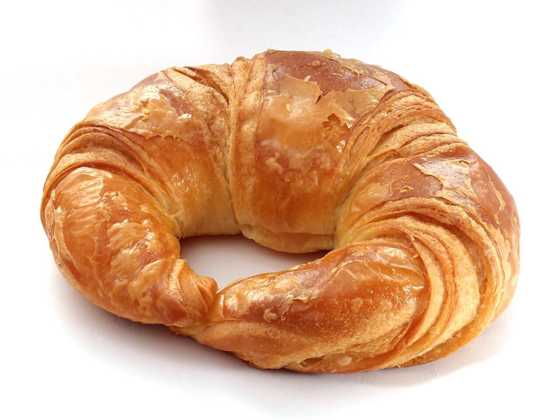
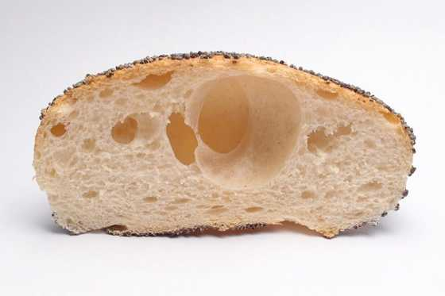

BAKERY / 青森県青森市原別
パン工房ショコラ
国産小麦100%、食品添加物を使わない。体にやさしいパンを、焼きたての温もりで。

ABOUT
お店の想い
パン工房ショコラは、青森市原別にあるパン屋です。お店のInstagramの紹介では、国産小麦100%を使い、食品添加物を使わない、体にやさしいパン作りを心がけているとされています。
店名の由来は確認できていません。このページのココア色の配色は、店名から受ける印象をもとにした制作側のイメージです。

BREAD
パンのこと
実際の品ぞろえ・価格・営業時間・定休日は準備中です。下の写真はフリー素材のイメージです。




IMAGE
素材のイメージ
素材を大切にする雰囲気を表したイメージ写真です(店の実際の商品ではありません)。


VOICE
口コミ(イメージ例)
以下は制作側が作成したイメージ例で、実在の声ではありません。
イメージ例
朝に買ったパンが、夜まで素直においしい。小麦の香りがちゃんとするところが好きです。
イメージ例
毎日食べるものだから、素材を気にして作っているお店だと安心します。
イメージ例
まだ行ったことのない町でも、パン屋さんの扉を開けるのは楽しい時間です。